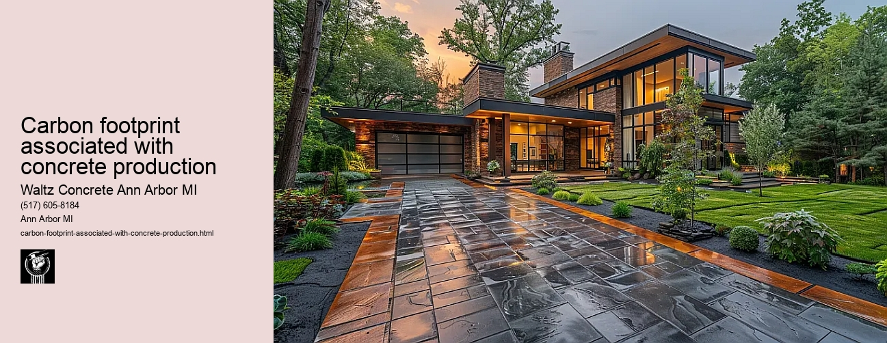

News
Concrete Driveway Installation Ann Arbor Mi
Concrete Driveway Installation Ann Arbor Mi
Choosing the right contractor for installation
Cost of concrete driveway installation in Ann Arbor
Permit requirements for driveway installation in Ann Arbor
The process and timeline of concrete driveway installation
Different types of concrete used in driveways
Maintenance and Repair of Concrete Driveways in Ann Arbor Mi
Maintenance and Repair of Concrete Driveways in Ann Arbor Mi
Preventive maintenance tips for durability
Common causes for concrete driveway damage
Professional companies offering repair services in Ann Arbor
Doityourself versus professional repairs
Costs associated with repairing a concrete driveway
Designs and Styles of Concrete Driveways in Ann Arbor Mi
Designs and Styles of Concrete Driveways in Ann Arbor Mi
Popular design trends for driveways
Considering climate factors when choosing a design or style
Unique customizations available for concrete driveways
Influence of home architecture on driveway design
Stamped stained and decorative options
Environmental Impact of Concrete Driveways in Ann Arbor Mi
Environmental Impact of Concrete Driveways in Ann Arbor Mi
Carbon footprint associated with concrete production
Use of sustainable materials in concrete driveways
Drainage considerations to reduce environmental impact
Local regulations regarding environmentally friendly driveways
Potential use of permeable or porous pavement
Alternatives to Concrete Driveways in Ann Arbor Mi
Alternatives to Concrete Driveways in Ann Arbor Mi
Asphalt driveways and their proscons
Paver stone driveways and their benefitsdrawbacks
Gravel or crushed stone as an alternative option
Comparing costs between different driveway materials
Resinbound surfaces as emerging technology
About Us
Contact Us

Carbon footprint associated with concrete production
Carbon footprint associated with concrete production
Title: The Carbon Footprint Associated with Concrete Production
The issue of climate change and global warming has become increasingly prevalent in the recent years. A major contributor to these environmental changes is the emission of greenhouse gases, which are significantly produced by various industries, including concrete production. This essay aims to explore the carbon footprint associated with concrete production, a topic that is often overlooked yet crucial in our quest towards sustainable living.
Concrete serves as the backbone of modern infrastructure. It is one of the most widely used construction materials worldwide due to its durability and versatility. However, this ubiquity comes at a cost - an immense carbon footprint. A report from Chatham House revealed that if the cement industry were a country, it would be the third largest emitter of CO2 globally, following China and the US.
To understand why concrete production contributes so significantly to greenhouse gas emissions, one must first understand its composition. Concrete primarily consists of cement (the binding ingredient), aggregate such as sand or gravel, and water. The main culprit for high CO2 emissions lies in cement manufacturing.
Cement production involves heating limestone (calcium carbonate) with small amounts of other materials (such as clay) to 1450°C in a kiln. This process transforms raw materials into clinker small grey pebbles that are ground into fine powder hence producing cement. Two aspects during this procedure contribute heavily to carbon dioxide emission: combustion and calcination.
Firstly, large quantities of fossil fuels are burned to achieve such high temperatures for kilns; this process releases significant amounts of CO2 through combustion. Secondly, calcination happens when limestone gets heated causing it to decompose into lime (CaO) and release CO2 gas in return.
Given this knowledge on how concrete production leads to massive levels of CO2 emissions, addressing this problem becomes critical amidst growing concerns about climate change. There have been attempts within the industry itself towards reducing its own carbon footprint. This includes energy efficiency improvements in the manufacturing process, use of alternative fuels, and development of novel types of cement with lower carbon footprints.
Nevertheless, while these measures are helpful, they may not be sufficient. There is a pressing need for broader systemic changes such as regulations to encourage or mandate the use of low-carbon alternatives. Public awareness also plays a crucial role in driving the demand for more sustainable construction materials.
In conclusion, the concrete industry's vast contribution to global CO2 emissions cannot be ignored in our fight against climate change. To effectively reduce its carbon footprint, we must apply a multi-faceted approach involving technological innovation, regulatory changes and raising public awareness. Only then can we hope to create a more sustainable future where infrastructure growth does not come at an irreparable cost to our planet's health.
Environmental Impact of Concrete Driveways in Ann Arbor Mi
Carbon footprint associated with concrete production
Frequently Asked Questions
What is the carbon footprint associated with concrete production for driveways in Ann Arbor, MI?
The exact carbon footprint can vary based on factors such as the specific methods and materials used. However, generally speaking, concrete production is responsible for approximately 8% of global CO2 emissions.
How are companies in Ann Arbor, MI working to reduce the carbon footprint of concrete production?
Many local businesses are implementing greener practices, such as using recycled materials or supplementary cementing materials (SCMs), optimizing mix designs to use less cement overall, and utilizing carbon capture technology.
Are there any eco-friendly alternatives to traditional concrete available in Ann Arbor, MI for driveway construction?
Yes, some options include pervious concrete which allows water to drain through it reducing runoff pollution; recycled aggregate concrete made from crushed up old concrete; or even other materials like gravel or permeable pavers. The availability may depend on the specific contractor or supplier.
Carbon footprint associated with concrete production